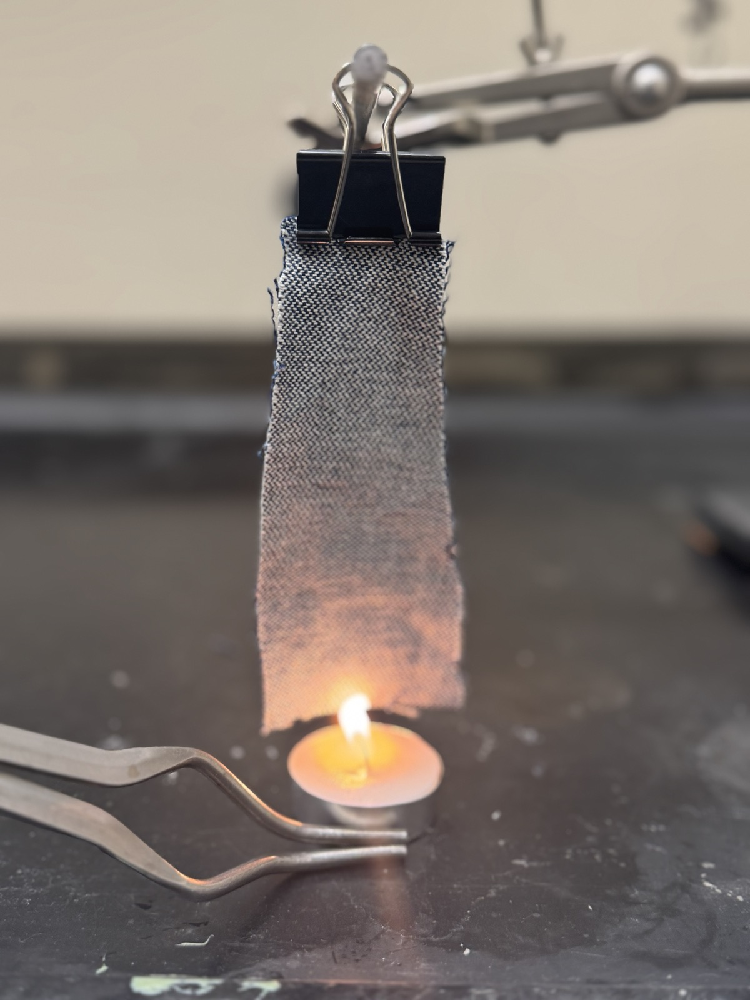
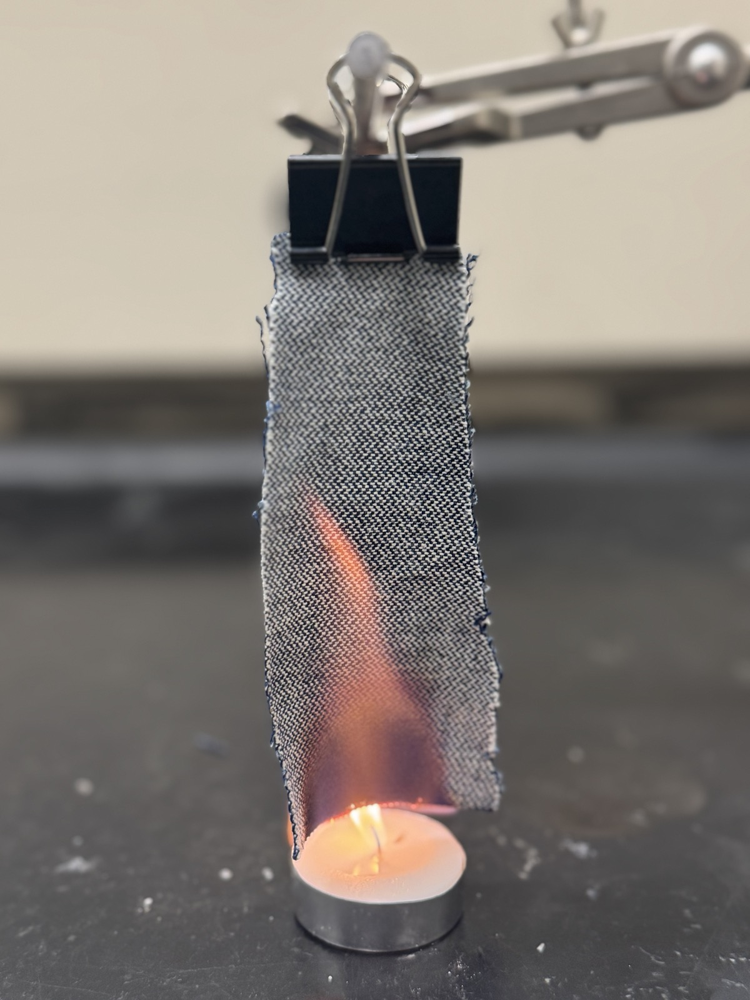
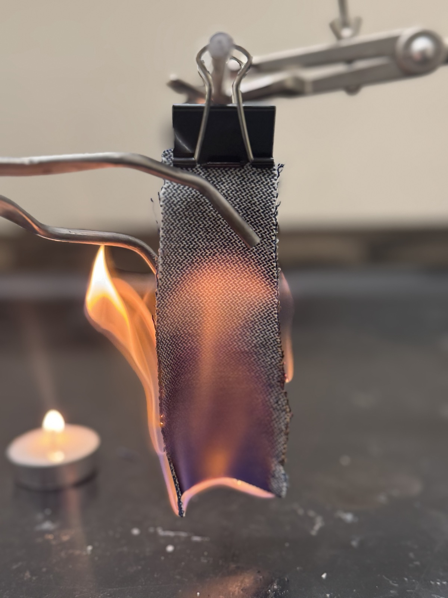
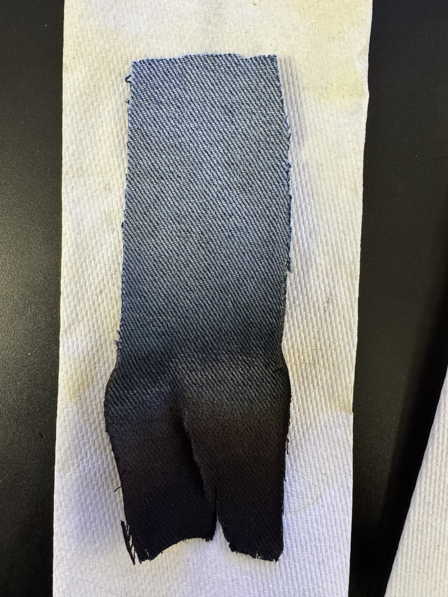

New FR
New Flame Retardant (FR) jeans self-extinguish after being removed from flame.
Tilly Williams, Daniel Fealko, Daniel Johnson

New FR
New Flame Retardant (FR) jeans self-extinguish after being removed from flame.

Old FR
Old Flame Retardant (FR) jeans fail to self-extinguish after being removed from flame.

Pre-Burn
Candle pushed into path of sample.

Mid-Burn
Sample left in flame for 15 seconds.

Quench
Sample removed with tongs to be quenched.

Post-Burn
Length of char measured from bottom to highest point of discoloration.